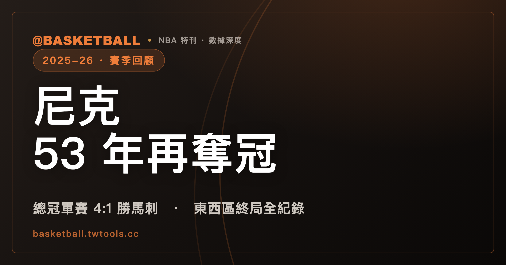

2025-26 NBA 賽季總回顧：紐約尼克隊史第 3 冠，相隔 53 年重返總冠軍
2025-26 NBA 總冠軍為紐約尼克，總冠軍賽以 4:1 擊敗聖安東尼奧馬刺；尼克上兩次封王分別是 1970 年與 1973 年，本季是隊史第 3 冠、相隔 53 年後再度奪冠。

NBA · 賽季總回顧｜總冠軍賽 4:1 · 例行賽終局排名 · 三個系列賽比分
2025-26 NBA 賽季自 2025 年 10 月 21 日開季，一路打到 2026 年 6 月 14 日的總冠軍賽終場，紐約尼克以 4 勝 1 敗擊退聖安東尼奧馬刺，拿下隊史第 3 座總冠軍。尼克上兩次封王分別是 1970 年與 1973 年，這座冠軍距離上一次奪冠已經相隔 53 年，也是尼克隊史目前最長的一段封王空窗期畫下句點的一季。從例行賽開打到總冠軍賽終場，中間橫跨了近八個月的賽程，三十支球隊先在各自聯盟裡打完例行賽、排定終局名次，經附加賽補齊季後賽名單後，再依序進入季後賽的東西區決賽與總冠軍賽三個層級的系列賽。本文從例行賽終局的東西區三十隊排名開始，整理三十隊各自的戰績、勝率與勝差；接著整理季後賽三個系列賽的逐場比分，包括東區決賽尼克 4:0 橫掃克里夫蘭騎士、西區決賽聖安東尼奧馬刺 4:3 淘汰衛冕軍奧克拉荷馬雷霆、以及總冠軍賽尼克 4:1 擊退馬刺的完整過程；再把這座冠軍放進近三個賽季的歷史座標裡對照；最後整理 2026-27 賽季目前已知的制度性時間軸。全文數據截至 2026-06-14 賽季終了，所有戰績、勝差與逐場比分均以此為準。
例行賽終局：東西區三十隊排名
東區部分，底特律活塞以 60 勝 22 敗、勝率 .732 排名東區第一種子，是本季例行賽戰績最佳的東區球隊；波士頓塞爾提克以 56 勝 26 敗排名第二，落後活塞 4 場勝差；紐約尼克以 53 勝 29 敗排名第三，落後活塞 7 場勝差；克里夫蘭騎士以 52 勝 30 敗排名第四，落後活塞 8 場勝差。東區前四名的戰績呈現逐級遞減、差距平均分布的樣貌，第一到第四名之間沒有出現斷層式的落差。東區中段班則出現兩組同戰績：多倫多暴龍與亞特蘭大老鷹同為 46 勝 36 敗、勝差同樣是 14 場，依官方比序分列第五與第六；費城七六人與奧蘭多魔術同為 45 勝 37 敗、勝差同樣是 15 場，分列第七與第八（同戰績球隊的正式名次由聯盟 tiebreaker 決定，非並列）。東區末段班的華盛頓巫師以 17 勝 65 敗排名東區最後一名，勝差達到 43 場，是東區戰績與勝差落差最大的一隊。東區完整終局排名如下：
| 排名 | 球隊 | 戰績 | 勝率 | 勝差 |
|---|---|---|---|---|
| 1 | 底特律活塞 | 60-22 | .732 | — |
| 2 | 波士頓塞爾提克 | 56-26 | .683 | 4 |
| 3 | 紐約尼克 | 53-29 | .646 | 7 |
| 4 | 克里夫蘭騎士 | 52-30 | .634 | 8 |
| 5 | 多倫多暴龍 | 46-36 | .561 | 14 |
| 6 | 亞特蘭大老鷹 | 46-36 | .561 | 14 |
| 7 | 費城七六人 | 45-37 | .549 | 15 |
| 8 | 奧蘭多魔術 | 45-37 | .549 | 15 |
| 9 | 夏洛特黃蜂 | 44-38 | .537 | 16 |
| 10 | 邁阿密熱火 | 43-39 | .524 | 17 |
| 11 | 密爾瓦基公鹿 | 32-50 | .390 | 28 |
| 12 | 芝加哥公牛 | 31-51 | .378 | 29 |
| 13 | 布魯克林籃網 | 20-62 | .244 | 40 |
| 14 | 印第安納溜馬 | 19-63 | .232 | 41 |
| 15 | 華盛頓巫師 | 17-65 | .207 | 43 |
西區部分，奧克拉荷馬雷霆以 64 勝 18 敗、勝率 .780 排名西區第一種子，也是全聯盟戰績最佳的球隊；聖安東尼奧馬刺以 62 勝 20 敗排名第二，只落後雷霆 2 場勝差，是全聯盟戰績第二佳的球隊。雷霆與馬刺這兩隊的勝場數，都明顯高於東區任何一支球隊，兩隊之間的勝差只有 2 場，是西區前段班競爭最激烈的一組名次。西區同樣出現同戰績組：紐奧良鵜鶘與達拉斯獨行俠同為 26 勝 56 敗、勝差同樣是 38 場，依官方比序分列第十一與第十二；沙加緬度國王與猶他爵士則同為 22 勝 60 敗、勝率同為 .268、勝差同為 42 場，分列第十四與第十五。中段班方面，鳳凰城太陽以 45 勝 37 敗、勝率 .549 排在例行賽第七，波特蘭拓荒者與洛杉磯快艇同為 42 勝 40 敗，分列第八與第九；隨後的附加賽由拓荒者以 114:110 擊敗太陽、取得季後賽第 7 種子，太陽再在第 8 種子決定戰以 111:96 擊敗金州勇士補上最後一張季後賽門票——例行賽終局名次與附加賽後的季後賽種子因此並不相同，本文表格呈現的是例行賽終局名次。西區完整終局排名如下：
| 排名 | 球隊 | 戰績 | 勝率 | 勝差 |
|---|---|---|---|---|
| 1 | 奧克拉荷馬雷霆 | 64-18 | .780 | — |
| 2 | 聖安東尼奧馬刺 | 62-20 | .756 | 2 |
| 3 | 丹佛金塊 | 54-28 | .659 | 10 |
| 4 | 洛杉磯湖人 | 53-29 | .646 | 11 |
| 5 | 休士頓火箭 | 52-30 | .634 | 12 |
| 6 | 明尼蘇達灰狼 | 49-33 | .598 | 15 |
| 7 | 鳳凰城太陽 | 45-37 | .549 | 19 |
| 8 | 波特蘭拓荒者 | 42-40 | .512 | 22 |
| 9 | 洛杉磯快艇 | 42-40 | .512 | 22 |
| 10 | 金州勇士 | 37-45 | .451 | 27 |
| 11 | 紐奧良鵜鶘 | 26-56 | .317 | 38 |
| 12 | 達拉斯獨行俠 | 26-56 | .317 | 38 |
| 13 | 曼菲斯灰熊 | 25-57 | .305 | 39 |
| 14 | 沙加緬度國王 | 22-60 | .268 | 42 |
| 15 | 猶他爵士 | 22-60 | .268 | 42 |
把兩區並排來看，活塞以 60 勝坐上東區第一種子，這個勝場數放進西區只能排到第三名（次於雷霆的 64 勝與馬刺的 62 勝，高於西區第三種子丹佛金塊的 54 勝）；反過來說，西區第一種子雷霆的 64 勝，若放進東區則是遙遙領先其他球隊的數字，比東區第一種子活塞還多出 4 勝。這代表本季東西區的戰績分布並不對稱，西區前段班球隊的勝場數整體高於東區前段班，這也是尼克最終從東區第三種子出發、一路打進並拿下總冠軍時，經常被拿出來對照的一組結構性數字：馬刺以西區第二種子、62 勝的成績打進總冠軍賽，尼克則是以東區第三種子、53 勝的成績打進總冠軍賽，兩隊的例行賽勝場數相差達 9 場之多。完整的東西區三十隊終局排名，可參考 /standings/。
季後賽三個系列賽
東區決賽：尼克 4:0 橫掃騎士
東區決賽由東區第三種子紐約尼克對上東區第四種子克里夫蘭騎士，兩隊例行賽戰績只差 1 場勝差（53 勝對 52 勝），系列賽最終由尼克以 4 勝 0 敗橫掃晉級。逐場比分如下：
| 戰次 | 比分（尼克：騎士） | 勝方 |
|---|---|---|
| G1 | 115:104 | 尼克 |
| G2 | 109:93 | 尼克 |
| G3 | 121:108 | 尼克 |
| G4 | 130:93 | 尼克 |
四場比賽尼克每一場的分差都在 10 分以上：G1 分差 11 分、G2 分差 16 分、G3 分差 13 分、G4 分差 37 分，其中 G4 是四場當中分差最大的一場，也是整個系列賽唯一分差超過 30 分的一場。四場比賽尼克的平均分差接近 20 分，整個系列賽尼克沒有讓騎士拿下任何一場勝利，是本季三個系列賽當中戰線最短、比分分佈最一面倒的一組對決。對照兩隊在例行賽終局只差 1 場勝差的排名位置，季後賽場上的比分差距，明顯比例行賽的名次差距要大得多。
西區決賽：馬刺 4:3 淘汰衛冕軍雷霆
西區決賽的對戰組合，是西區第二種子聖安東尼奧馬刺挑戰西區第一種子、同時也是 2024-25 賽季衛冕軍的奧克拉荷馬雷霆。這組系列賽打滿七場，最終由馬刺以 4 勝 3 敗淘汰衛冕軍晉級總冠軍賽；第七戰馬刺在客場以 111:103 拿下系列賽的最後一勝，分差為 8 分。由於馬刺與雷霆在例行賽終局排名上只相差 2 場勝差（62 勝對 64 勝），系列賽打滿七場、且由客隊在第七戰拿下勝利，可以看出兩隊在例行賽的戰力差距，並沒有完全反映在季後賽的對抗強度上。這也是本季三個系列賽當中戰線最長、唯一打滿七場的一組對決，馬刺因此成為本季唯一一支必須先淘汰上一季衛冕軍、才能晉級總冠軍賽的球隊。從系列賽的結構來看，客場球隊能在第七戰拿下勝利，本身就代表這組對戰一路纏鬥到最後一場才分出高下，與東區決賽尼克 4:0 直落四晉級的節奏形成明顯對比。
總冠軍賽：尼克 4:1 擊退馬刺
總冠軍賽由東區代表紐約尼克，對上西區代表聖安東尼奧馬刺。從例行賽戰績來看，馬刺以西區 62 勝的成績打進總冠軍賽，尼克則是以東區 53 勝的成績打進總冠軍賽，兩隊例行賽勝場數相差 9 場；但總冠軍賽最終由尼克以 4 勝 1 敗拿下系列賽勝利。逐場比分如下：
| 戰次 | 比分（尼克：馬刺） | 勝方 |
|---|---|---|
| G1 | 105:95 | 尼克 |
| G2 | 105:104 | 尼克 |
| G3 | 111:115 | 馬刺 |
| G4 | 107:106 | 尼克 |
| G5 | 94:90 | 尼克 |
五場比賽當中，尼克拿下四勝，唯一的敗場是 G3 的 111:115、分差 4 分；把五場比賽的比分全部列出，依序是 105:95、105:104、111:115、107:106、94:90，尼克在系列賽裡的單場得分介於 94 分到 111 分之間，馬刺的單場得分則介於 90 分到 115 分之間。系列賽張力集中在 G2 與 G4 這兩場：G2 尼克以 105:104 只贏 1 分，G4 尼克再以 107:106 同樣只贏 1 分，兩場加起來的總分差只有 2 分，是整個系列賽當中最貼近的兩場比賽，也是全季後賽三個系列賽裡分差最小的兩場。相對地，G1 的 105:95 分差 10 分、G5 的 94:90 分差 4 分，屬於相對明確的勝負。整體來看，五場的分差依序是 10、1、4、1、4 分——兩場 1 分、兩場 4 分、一場 10 分，沒有任何一場超過 10 分，是本季三個系列賽當中場均分差最小的一組對決；尼克就是在這樣的分差區間裡拿下 4 勝 1 敗。
三個系列賽放在一起看
把三個系列賽的場次與分差並排比較，可以看出季後賽三個層級呈現出三種不同的節奏：東區決賽尼克 4:0 橫掃騎士，四場比賽全部拿下、平均分差接近 20 分，是三組對決裡場次最少、分差最懸殊的一組；西區決賽馬刺 4:3 淘汰雷霆，打滿七戰四勝制的全部七場，是三組對決裡場次最多、纏鬥時間最長的一組，最終決勝的第七戰仍有 8 分分差；總冠軍賽尼克 4:1 擊退馬刺，五場比賽當中有兩場是 1 分決勝、其餘三場分差分別為 10、4、4 分，是三組對決裡場均分差最小的一組。尼克在通往總冠軍的路上，先是以最一面倒的方式橫掃東區決賽，再於總冠軍賽經歷全季後賽最貼近的比分拿下勝利，這兩種截然不同的系列賽節奏，都出現在同一支冠軍球隊的季後賽歷程裡。
放進歷史座標：近三個賽季冠軍
把 2025-26 賽季放進最近三個賽季的總冠軍紀錄裡來看，可以看出冠軍球隊逐季更替、沒有連霸的情況：
| 賽季 | 冠軍球隊 | 總冠軍賽戰績 |
|---|---|---|
| 2023-24 | 波士頓塞爾提克 | 4:1 勝達拉斯獨行俠 |
| 2024-25 | 奧克拉荷馬雷霆 | 4:3 勝印第安納溜馬 |
| 2025-26 | 紐約尼克 | 4:1 勝聖安東尼奧馬刺 |
把時間軸拉長來看，連續三個賽季由三支不同球隊拿下總冠軍，沒有任何一隊完成連霸：2023-24 賽季由波士頓塞爾提克以 4:1 擊敗達拉斯獨行俠封王，2024-25 賽季換成奧克拉荷馬雷霆以 4:3 擊敗印第安納溜馬奪冠，來到 2025-26 賽季則由紐約尼克以 4:1 擊敗聖安東尼奧馬刺封王。值得一提的是，2024-25 賽季的冠軍雷霆，本季在西區決賽就被馬刺以 4:3 淘汰，未能踏入總冠軍賽舞台挑戰衛冕，也就是說近三個賽季的冠軍球隊，隔年最好的成績也只停留在打進聯盟決賽階段。尼克本季拿下的是隊史第 3 座總冠軍，前兩座分別在 1970 年與 1973 年拿下，本季封王與上一次奪冠之間相隔 53 年，是尼克隊史目前最長的一段奪冠空窗期，也讓尼克成為近三個賽季裡，唯一一支距離上一次封王超過半世紀的冠軍球隊。
2026-27 賽季怎麼接著看
截至本文整理時間點，2026-27 賽季的例行賽賽程表尚未公布，聯盟慣例是在 8 月中旬對外公布下一季完整賽程；自由市場則已經在 7 月進行中，各隊陣容調整仍在持續變動階段。對於剛拿下總冠軍的尼克來說，下一季會從衛冕軍的身分重新出發；對於西區決賽被淘汰的雷霆、以及總冠軍賽敗北的馬刺來說，下一季則是從各自例行賽終局的名次基礎上，重新累積下一輪的季後賽資格。這代表 2026-27 賽季目前只能確認制度性的時間軸：賽程於 8 月中旬公布、自由市場自 7 月已經展開；至於各隊實際的陣容變化與簽約結果，要等賽程公布前後才會逐步明朗，本文暫不對此進行推測，讀者可留意賽程公布後再對照各隊的開季安排，屆時也才能進一步比對下一季例行賽的終局排名，是否延續本季東西區戰績分布不對稱的結構。
常見問題
2025-26 NBA 總冠軍是哪一隊？
2025-26 賽季總冠軍是紐約尼克，總冠軍賽以 4 勝 1 敗擊退聖安東尼奧馬刺，系列賽於 2026 年 6 月 14 日結束，唯一敗場是 G3 的 111:115，其餘四場都由尼克拿下勝利，其中 G2 與 G4 都只贏 1 分。
尼克上一次奪冠是什麼時候？
尼克隊史目前共 3 座總冠軍，前兩座分別在 1970 年與 1973 年拿下，2025-26 賽季是相隔 53 年後的第 3 冠，也是尼克隊史目前最長的一段封王空窗期。
東西區例行賽戰績最好的球隊是哪一隊？
東區戰績最佳是底特律活塞，以 60 勝 22 敗排名東區第一種子；西區戰績最佳是奧克拉荷馬雷霆，以 64 勝 18 敗排名西區第一種子，也是全聯盟戰績最佳的球隊。雷霆的 64 勝，比東區第一種子活塞多出 4 勝；西區第二種子馬刺以 62 勝排名全聯盟第二佳戰績，只落後雷霆 2 場勝差。
馬刺淘汰衛冕軍雷霆花了幾場比賽？
西區決賽馬刺與雷霆打滿七戰四勝制的全部七場，馬刺最終以 4 勝 3 敗淘汰衛冕軍雷霆，其中第七戰馬刺在客場以 111:103 拿下系列賽的最後一勝，分差 8 分。這也是本季三個系列賽當中唯一打滿七場的一組對決，相對於東區決賽尼克 4:0 直落四晉級，西區決賽的戰線明顯拉得更長。
哪裡可以看完整的東西區三十隊終局排名？
完整的東西區三十隊例行賽終局排名，包含每隊戰績、勝率與勝差，可參考 /standings/；其中東區與西區各有兩組同戰績球隊（東區第五、第六名同為 46 勝，第七、第八名同為 45 勝；西區第十一、第十二名同為 26 勝，第十四、第十五名同為 22 勝），同戰績的正式先後由聯盟 tiebreaker 決定，完整細節同樣可在該頁面查閱。